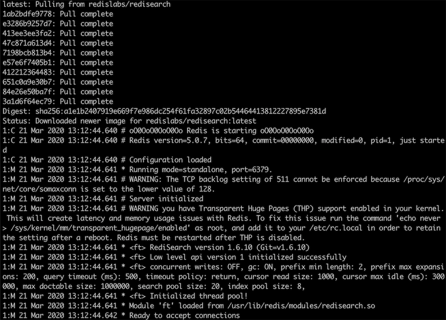
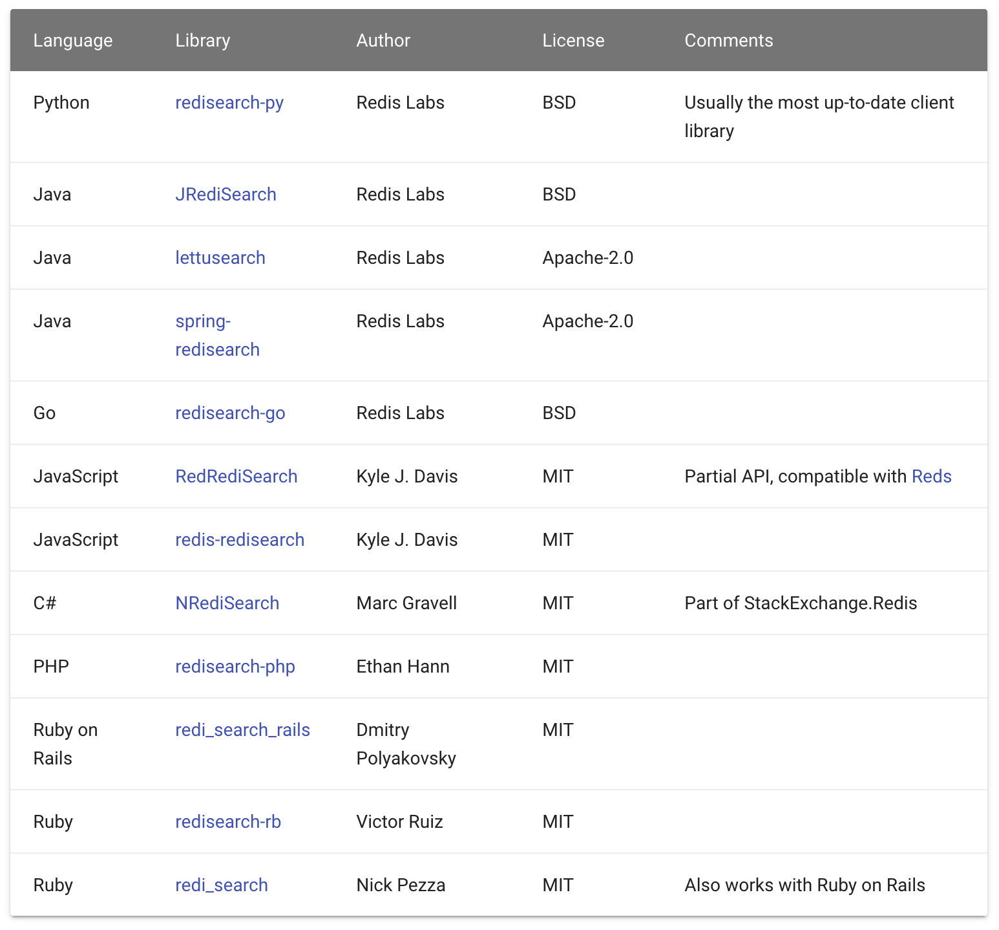

- 01 Redis 是如何执行的.md.html
- 02 Redis 快速搭建与使用.md.html
- 03 Redis 持久化——RDB.md.html
- 04 Redis 持久化——AOF.md.html
- 05 Redis 持久化——混合持久化.md.html
- 06 字符串使用与内部实现原理.md.html
- 07 附录：更多字符串操作命令.md.html
- 08 字典使用与内部实现原理.md.html
- 09 附录：更多字典操作命令.md.html
- 10 列表使用与内部实现原理.md.html
- 11 附录：更多列表操作命令.md.html
- 12 集合使用与内部实现原理.md.html
- 13 附录：更多集合操作命令.md.html
- 14 有序集合使用与内部实现原理.md.html
- 15 附录：更多有序集合操作命令.md.html
- 16 Redis 事务深入解析.md.html
- 17 Redis 键值过期操作.md.html
- 18 Redis 过期策略与源码分析.md.html
- 19 Redis 管道技术——Pipeline.md.html
- 20 查询附近的人——GEO.md.html
- 21 游标迭代器（过滤器）——Scan.md.html
- 22 优秀的基数统计算法——HyperLogLog.md.html
- 23 内存淘汰机制与算法.md.html
- 24 消息队列——发布订阅模式.md.html
- 25 消息队列的其他实现方式.md.html
- 26 消息队列终极解决方案——Stream（上）.md.html
- 27 消息队列终极解决方案——Stream（下）.md.html
- 28 实战：分布式锁详解与代码.md.html
- 29 实战：布隆过滤器安装与使用及原理分析.md.html
- 30 完整案例：实现延迟队列的两种方法.md.html
- 31 实战：定时任务案例.md.html
- 32 实战：RediSearch 高性能的全文搜索引擎.md.html
- 33 实战：Redis 性能测试.md.html
- 34 实战：Redis 慢查询.md.html
- 35 实战：Redis 性能优化方案.md.html
- 36 实战：Redis 主从同步.md.html
- 37 实战：Redis哨兵模式（上）.md.html
- 38 实战：Redis 哨兵模式（下）.md.html
- 39 实战：Redis 集群模式（上）.md.html
- 40 实战：Redis 集群模式（下）.md.html
- 41 案例：Redis 问题汇总和相关解决方案.md.html
- 42 技能学习指南.md.html
- 43 加餐：Redis 的可视化管理工具.md.html
- 捐赠
32 实战：RediSearch 高性能的全文搜索引擎
RediSearch 是一个高性能的全文搜索引擎，它可以作为一个 Redis Module（扩展模块）运行在 Redis 服务器上。
RediSearch 主要特性如下：
- 基于文档的多个字段全文索引
- 高性能增量索引
- 文档排序（由用户在索引时手动提供）
- 在子查询之间使用 AND 或 NOT 操作符的复杂布尔查询
- 可选的查询子句
- 基于前缀的搜索
- 支持字段权重设置
- 自动完成建议（带有模糊前缀建议）
- 精确的短语搜索
- 在许多语言中基于词干分析的查询扩展
- 支持用于查询扩展和评分的自定义函数
- 将搜索限制到特定的文档字段
- 数字过滤器和范围
- 使用 Redis 自己的地理命令进行地理过滤
- Unicode 支持（需要 UTF-8 字符集）
- 检索完整的文档内容或只是 ID 的检索
- 支持文档删除和更新与索引垃圾收集
- 支持部分更新和条件文档更新
安装
和前面讲到布隆过滤器的引入方式一样，我们可以使用 RediSearch 官方推荐的 Docker 方式来安装并启动 RediSearch 功能，操作命令如下：
docker run -p 6379:6379 redislabs/redisearch:latest
安装并启动成功，如下图所示：

安装完成之后使用 redis-cli 来检查 RediSearch 模块是否加载成功，使用 Docker 启动 redis-cli，命令如下：
docker exec -it myredis redis-cli
其中“myredis”为 Redis 服务器的名称，执行结果如下：
127.0.0.1:6379> module list
1) 1) "name"
2) "ft"
3) "ver"
4) (integer) 10610
返回数组存在“ft”，表明 RediSearch 模块已经成功加载。
源码方式安装
如果不想使用 Docker，我们也可以使用源码的方式进行安装，安装命令如下：
git clone https://github.com/RedisLabsModules/RediSearch.git
cd RediSearch # 进入模块目录
make all
安装完成之后，可以使用如下命令启动 Redis 并加载 RediSearch 模块，命令如下：
src/redis-server redis.conf --loadmodule ../RediSearch/src/redisearch.so
使用
我们先使用 redis-cli 来对 RediSearch 进行相关的操作。
创建索引和字段
127.0.0.1:6379> ft.create myidx schema title text weight 5.0 desc text
OK
其中“myidx”为索引的ID，此索引包含了两个字段“title”和“desc”，“weight”为权重，默认值为 1.0。
将内容添加到索引
127.0.0.1:6379> ft.add myidx doc1 1.0 fields title "He urged her to study English" desc "good idea"
OK
其中“doc1”为文档 ID（docid），“1.0”为评分（score）。
根据关键查询
127.0.0.1:6379> ft.search myidx "english" limit 0 10
1) (integer) 1
2) "doc1"
3) 1) "title"
2) "He urged her to study English"
3) "desc"
4) "good idea"
可以看出我们使用 title 字段中的关键字“english”查询出了一条满足查询条件的数据。
中文搜索
首先我们需要先给索引中，添加一条中文数据，执行命令如下：
127.0.0.1:6379> ft.add myidx doc2 1.0 language "chinese" fields title "Java 14 发布了！新功能速览" desc "Java 14 在 2020.3.17 日发布正式版了，但现在很多公司还在使用 Java 7 或 Java 8"
OK
注意：这里必须要设置语言编码为中文，也就是“language “chinese””，默认是英文编码，如果不设置则无法支持中文查询（无法查出结果）。
我们使用之前的查询方式，命令如下：
127.0.0.1:6379> ft.search myidx "正式版"
1) (integer) 0
我们发现并没有查到任何信息，这是因为我们没有指定搜索的语言，不但保存时候要指定编码，查询时也需要指定，查询命令如下：
127.0.0.1:6379> ft.search myidx "发布了" language "chinese"
1) (integer) 1
2) "doc2"
3) 1) "desc"
2) "Java 14 \xe5\x9c\xa8 2020.3.17 \xe6\x97\xa5\xe5\x8f\x91\xe5\xb8\x83\xe6\xad\xa3\xe5\xbc\x8f\xe7\x89\x88\xe4\xba\x86\xef\xbc\x8c\xe4\xbd\x86\xe7\x8e\xb0\xe5\x9c\xa8\xe5\xbe\x88\xe5\xa4\x9a\xe5\x85\xac\xe5\x8f\xb8\xe8\xbf\x98\xe5\x9c\xa8\xe4\xbd\xbf\xe7\x94\xa8 Java 7 \xe6\x88\x96 Java 8"
3) "title"
4) "Java 14 \xe5\x8f\x91\xe5\xb8\x83\xe4\xba\x86\xef\xbc\x81\xe6\x96\xb0\xe5\x8a\x9f\xe8\x83\xbd\xe9\x80\x9f\xe8\xa7\x88"
从结果可以看出中文信息已经被顺利的查询出来了。
删除索引的数据
127.0.0.1:6379> ft.del myidx doc1
(integer) 1
我们使用索引加文档 ID 就可以实现删除数据的功能。
删除索引
我们可以使用“ft.drop”关键字删除整个索引，执行命令如下：
127.0.0.1:6379> ft.drop myidx
OK
查询索引详细信息
我们可以使用“ft.info”关键查询索引相关信息，执行命令如下：
127.0.0.1:6379> ft.info myidx
1) index_name
2) myidx
3) index_options
4) (empty list or set)
5) fields
6) 1) 1) title
2) type
3) TEXT
4) WEIGHT
5) "5"
2) 1) desc
2) type
3) TEXT
4) WEIGHT
5) "1"
7) num_docs
8) "2"
9) max_doc_id
10) "2"
11) num_terms
12) "9"
13) num_records
14) "18"
15) inverted_sz_mb
16) "0.000102996826171875"
17) total_inverted_index_blocks
18) "29"
19) offset_vectors_sz_mb
20) "1.71661376953125e-05"
21) doc_table_size_mb
22) "0.000164031982421875"
23) sortable_values_size_mb
24) "0"
25) key_table_size_mb
26) "8.0108642578125e-05"
27) records_per_doc_avg
28) "9"
29) bytes_per_record_avg
30) "6"
31) offsets_per_term_avg
32) "1"
33) offset_bits_per_record_avg
34) "8"
35) gc_stats
36) 1) bytes_collected
2) "0"
3) total_ms_run
4) "16"
5) total_cycles
6) "14"
7) avarage_cycle_time_ms
8) "1.1428571428571428"
9) last_run_time_ms
10) "2"
11) gc_numeric_trees_missed
12) "0"
13) gc_blocks_denied
14) "0"
37) cursor_stats
38) 1) global_idle
2) (integer) 0
3) global_total
4) (integer) 0
5) index_capacity
6) (integer) 128
7) index_total
8) (integer) 0
其中“num_docs”表示存储的数据数量。
代码实战
RediSearch 支持的客户端有以下这些。

本文我们使用 JRediSearch 来实现全文搜索的功能，首先在 pom.xml 添加 JRediSearch 引用：
<!-- https://mvnrepository.com/artifact/com.redislabs/jredisearch -->
<dependency>
<groupId>com.redislabs</groupId>
<artifactId>jredisearch</artifactId>
<version>1.3.0</version>
</dependency>
完整的操作代码如下：
import io.redisearch.client.AddOptions;
import io.redisearch.client.Client;
import io.redisearch.Document;
import io.redisearch.SearchResult;
import io.redisearch.Query;
import io.redisearch.Schema;
public class RediSearchExample {
public static void main(String[] args) {
// 连接 Redis 服务器和指定索引
Client client = new Client("myidx", "127.0.0.1", 6379);
// 定义索引
Schema schema = new Schema().addTextField("title",
5.0).addTextField("desc", 1.0);
// 删除索引
client.dropIndex();
// 创建索引
client.createIndex(schema, Client.IndexOptions.Default());
// 设置中文编码
AddOptions addOptions = new AddOptions();
addOptions.setLanguage("chinese");
// 添加数据
Document document = new Document("doc1");
document.set("title", "天气预报");
document.set("desc", "今天的天气很好，是个阳光明媚的大晴天，有蓝蓝的天空和白白的云朵。");
// 向索引中添加文档
client.addDocument(document,addOptions);
// 查询
Query q = new Query("天气") // 设置查询条件
.setLanguage("chinese") // 设置为中文编码
.limit(0,5);
// 返回查询结果
SearchResult res = client.search(q);
// 输出查询结果
System.out.println(res.docs);
}
}
以上程序执行结果如下：
[{"id":"doc1","score":1.0,"properties":{"title":"天气预报","desc":"今天的天气很好，是个阳光明媚的大晴天，有蓝蓝的天空和白白的云朵。"}}]
可以看出添加的中文数据，被正确的查询出来了。
小结
本文我们使用 Docker 和 源码编译的方式成功的启动了 RediSearch 功能，要使用 RediSearch 的全文搜索功能，必须先要创建一个索引，然后再索引中添加数据，再使用 ft.search 命令进行全文搜索，如果要查询中文内容的话，需要在添加数据时设置中文编码，并且在查询时也要设置中文编码，指定“language “chinese””。
参考 & 鸣谢
官网地址：
项目地址：
© 2019 - 2023 Liangliang Lee. Powered by gin and hexo-theme-book.